How to play
Learn a skill, practise it, earn stars. Come back every day to keep your streak and unlock your wishes!
Make your player
Tap Add a player. Type your name, pick an animal, your grade and a world: Space, Ocean, Jungle or Candy. Then tap Start playing.
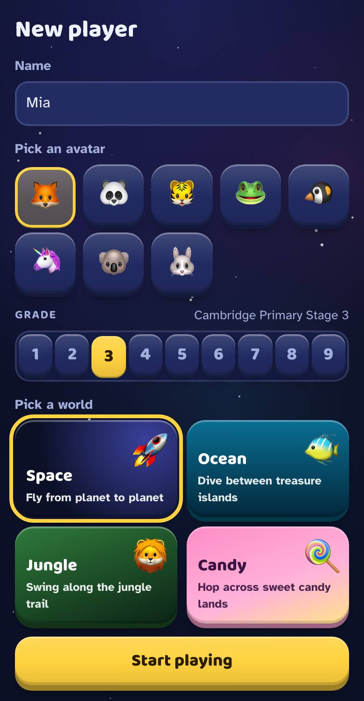
Pick a skill on the map
Your map shows every skill in your grade. The big button at the top is a good one to do next.
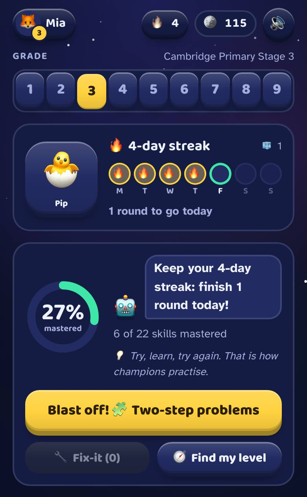
Learn it
Tap 📖 Learn for a few picture cards. Tap 🔊 and the game reads them to you.
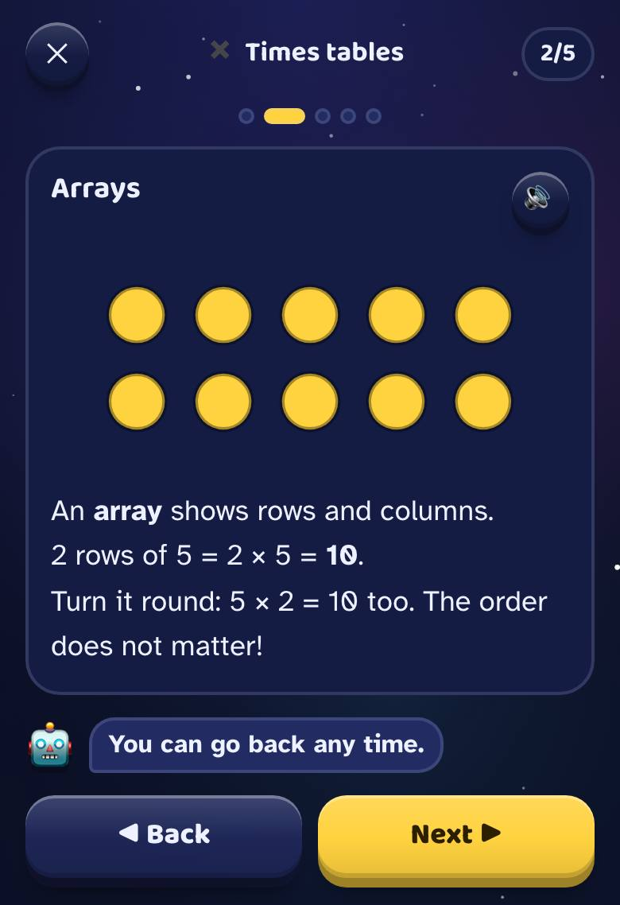
Practise
Tap ▶ Practise for 10 questions. Type your answer on the keypad and tap Check ✓.
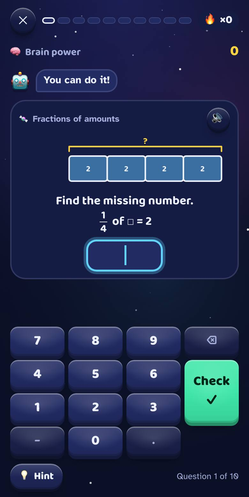
Stuck? That's OK!
Get it wrong and you get a 💡 hint, then a step to help you. Hints are free! A question you miss comes back later in 🔧 Fix-it, so you can beat it.
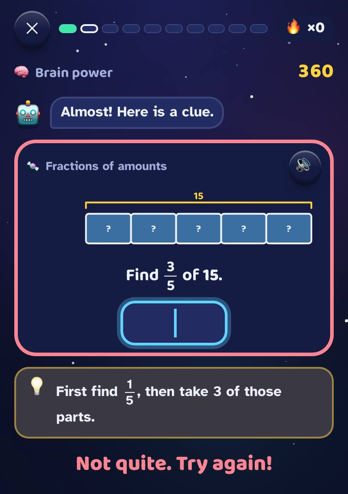
Earn stars
Get answers right first time to earn ⭐ and ⭐⭐. The third star ⭐⭐⭐ means you've mastered the skill: 8 of your last 10 right first time, on 2 different days. Star every skill in a unit to fight the boss!
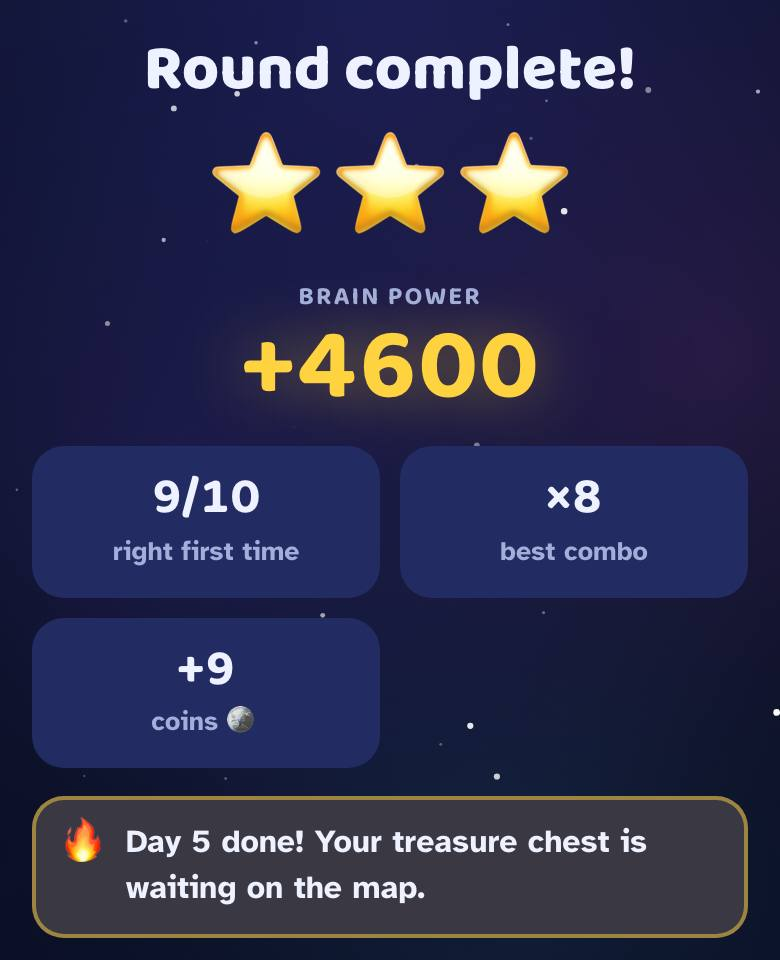
Come back every day
Finish today's rounds to grow your 🔥 streak, open the 🎁 treasure chest and help your pet grow. Spend your 🪙 coins on avatars and hats on the Me tab.
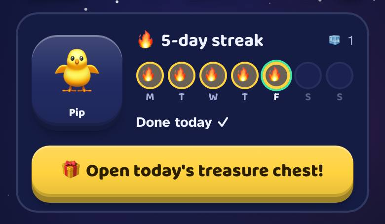
Unlock your wishes
A grown-up adds real wishes, like an ice cream trip. Master skills to fill the bar. When a wish unlocks: show a grown-up! 🎉
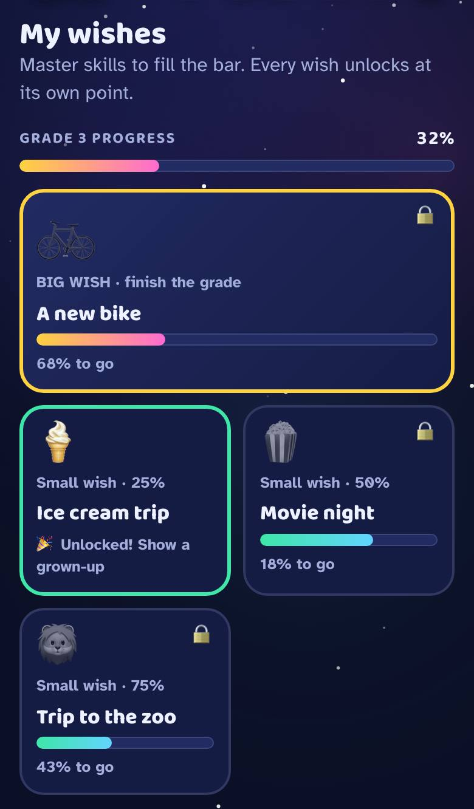
More things to try
One question from every skill. Get it right and you skip ahead.
Got 2 stars on a skill? See how many you can get right in a minute.
Change your world and your music on the Me tab.
Every skill you master gives you a sticker. Fill a page for bonus coins.
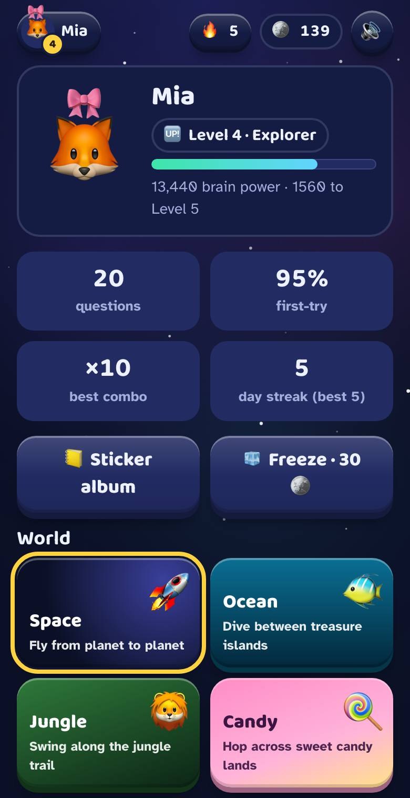
For grown-ups
Start on one device in a minute with no account. Add a free family account when you want every child's progress in one place, on every device.
Get started
Add your child
On the device your child plays on, open play.pmlm.uk and tap Add a player. No account needed.
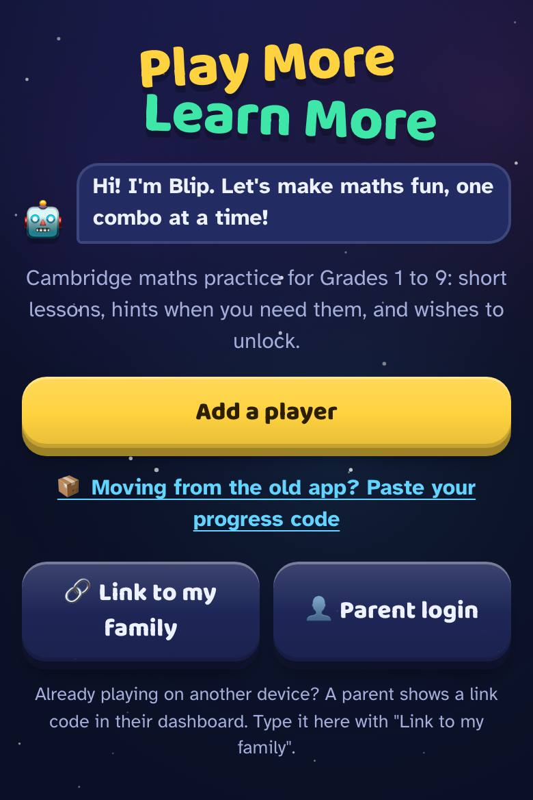
The 1-minute setup
Straight after, 👋 Grown-ups: 1-minute setup appears. Set a 4-digit parent PIN so wishes and settings stay for grown-ups, add a wish, put the game on the Home Screen and turn on a daily reminder.
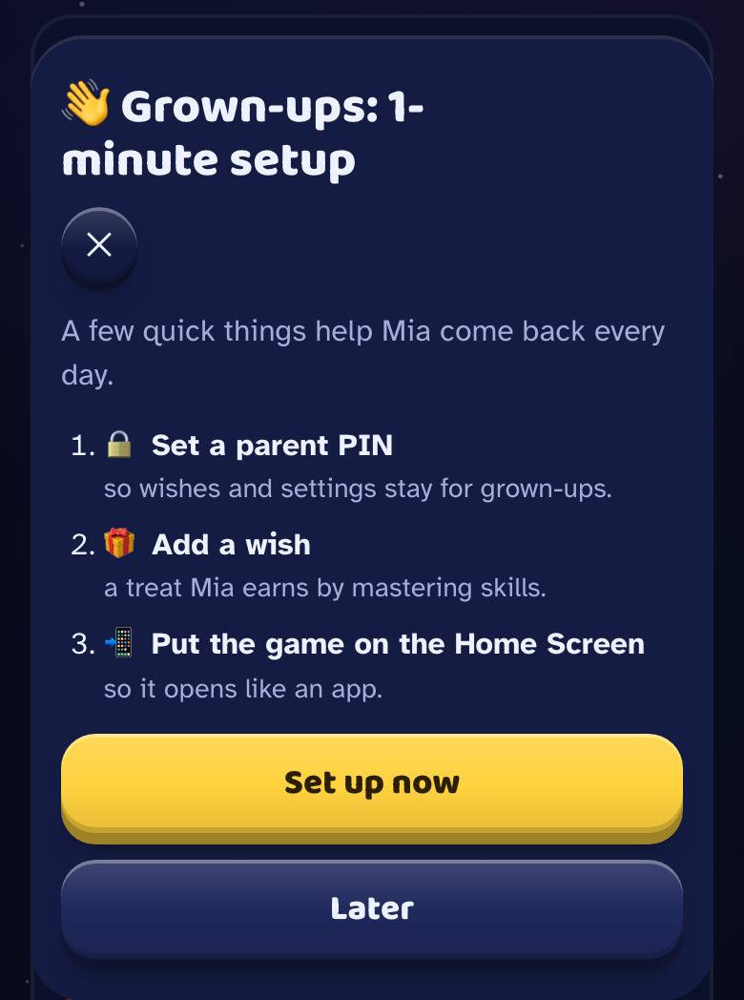
Add wishes
In Parents 🔒 → 🎁 Wishes, small wishes unlock at 25, 50 and 75% of the grade, and a big wish when your child finishes it. Tap Mark as granted once you've given it.
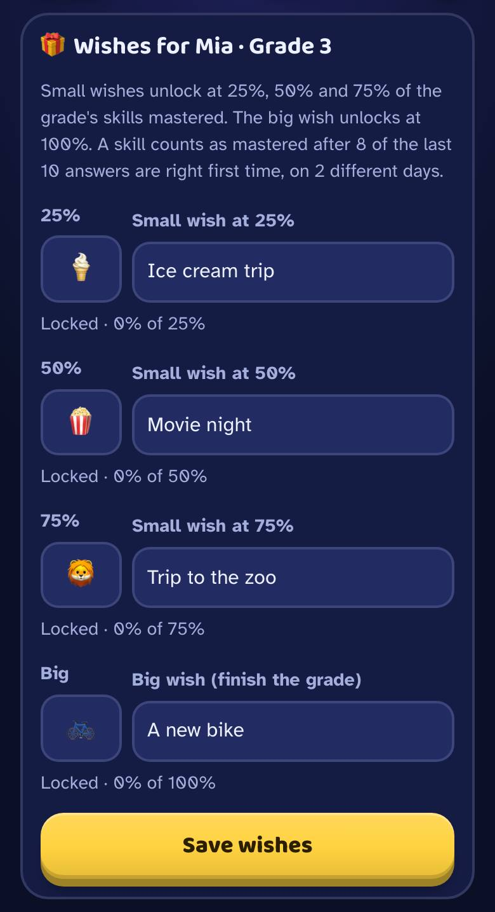
Several children or devices? Make a family account
Free. Every child's progress is saved online and you can see it from your own phone.
Log in on your own phone
Open play.pmlm.uk and tap 👤 Parent login (or Parents → ☁️ Family account). Create account with an email and password, or Continue with Google. Your family is made, and players already on that device join it.
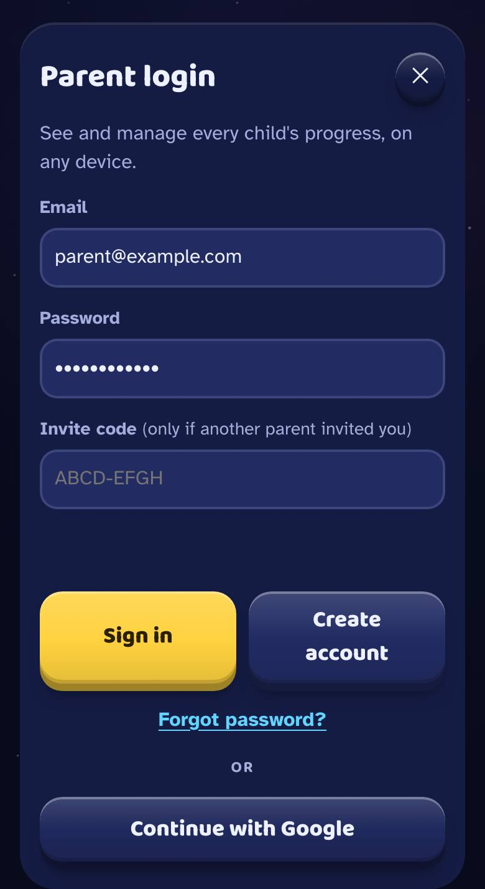
Get a link code
On your phone: Parents → 🔗 Devices and parents → Link a child's device. A code like ABCD-EFGH appears. It works for 30 minutes.
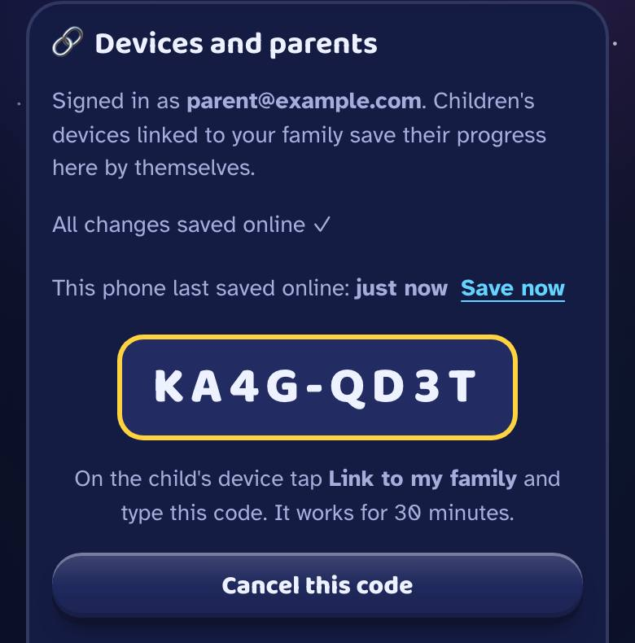
Link your child's device
On the child's device: 🔗 Link to my family, type the code, name the device and tap Link this device. Children never need a password. If the same child is already in your family, it asks "Is this the same …?" so the progress is combined, not doubled.
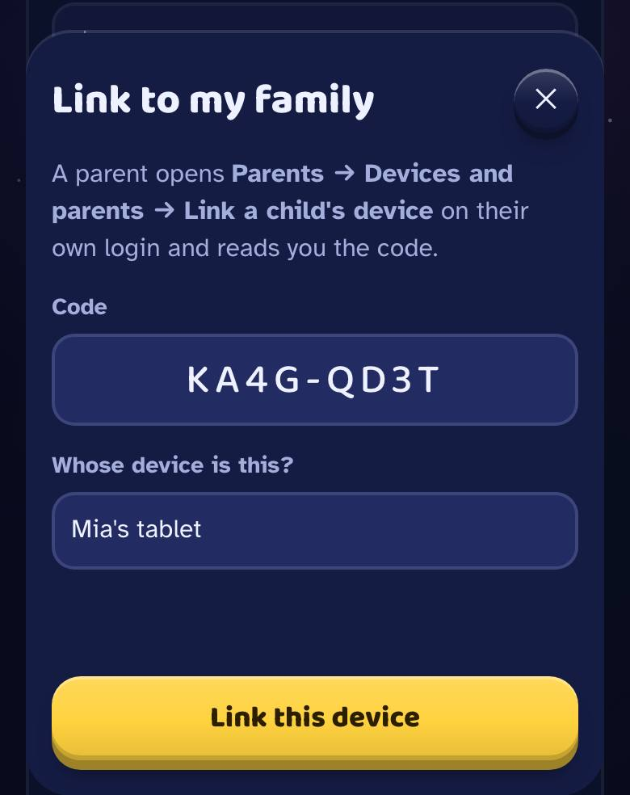
Lock a device to one child
In Devices and parents, set a device to 🔒 Plays as: your child. It then always opens as that child, and switching player needs the PIN.
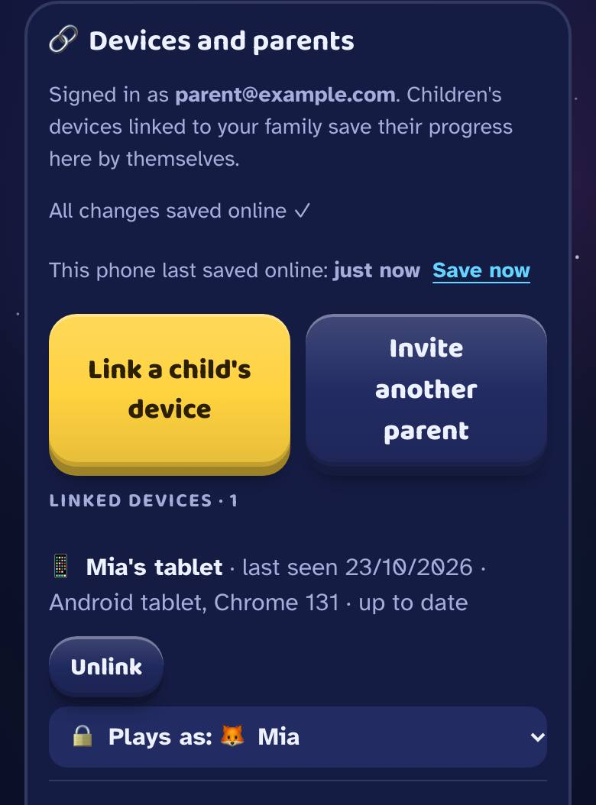
What you can control
All in the Parents 🔒 tab.
📅 Reports
This week and last week: rounds, minutes, new stars. Progress by skill, what needs most help, and recent mistakes.
🎁 Wishes
Rewards for progress through the grade, and 🔥 streak wishes for 7, 14 and 30 days in a row.
🎯 Daily goal
1, 2 or 3 rounds a day count as a done day, for streaks and the chest.
🤝 Family team goal
All your children's rounds this week fill one bar, with a reward you choose.
👧 Players
Change a grade, add or delete a player, and combine a child who was added twice.
🏅 Leaderboard name family test
A fun made-up nickname, the first name, or hidden.
🔔 Daily reminder family test
A friendly nudge at the time you pick, only on days nobody has played. On iPhone it needs the Home Screen app.
🔊 Sound and music
Sound effects, background music, volume and the button sound.
🔑 PIN
Change it any time. Forgot it? A grown-up maths question lets you set a new one.
💾 Backup
A code or file that moves players to another device without an account.
💬 Feedback
🐞 Report a problem, tell us what you think, or tap 🚩 on any question that looks wrong.
💱 Money symbol
Questions about money use your currency: ₼ $ £ € ₽ ₺ ₹.
Safe for children
Questions
How do I put the game on the Home Screen?
iPhone and iPad: open play.pmlm.uk in Safari, tap Share ⬆️, then Add to Home Screen and Add. Safari can clear a website's data after a week without a visit, but not a Home Screen app, and reminders need it too.
Android: Parents → 📲 Home Screen → Install the game, or the browser menu ⋮ → Install app.
We played on pmlm.uk or the old GitHub address. Is our progress safe?
Yes. Open the old address in the same browser and it moves your progress to play.pmlm.uk by itself. An old Home Screen icon on iPhone or iPad shows a Copy progress code button and four steps instead.
Sign-ins stay at the old address, so a parent logs in again and each linked device is linked again with a new code. Then set 🔒 Plays as and turn reminders on again.
I forgot the parent PIN.
In the Parents tab, tap Forgot the PIN?. Answer a grown-up maths question, then choose a new PIN.
Does it work without internet?
Once the game is open, yes, and progress is saved on the device as your child plays. Opening it needs a connection. A family account uploads progress when the device is back online.
Which grades and topics does it cover?
The Cambridge curriculum for Primary Stages 1 to 6 and Lower Secondary Stages 7 to 9: 48 units and 201 skills, from counting to algebra. Every skill can be practised at any time.
What do you collect, and what are the cookies for?
On the device: progress is saved in the browser. It leaves the device only with a family account, which only your family's parents and linked devices can read.
Play stats: what was played (grade, skill, round size, time), with random ids and never names, so we can see what helps. Switch them off in Parents → Settings.
Google Analytics: this page and the game tell Google Analytics which screens are opened and when a round or lesson is finished, with no names, no player ids and no typed text. Advertising features are off. It uses cookies only if a grown-up taps Allow (here, or in the game under Parents → Settings); otherwise it counts without cookies. Google sees the device's internet address when it is used. Cookie settings
Cloudflare Web Analytics: Cloudflare, which serves this page and the game, counts visits and how fast pages load: the page address, the site that linked to it, the country, and the type of device and browser. It uses no cookies, stores nothing on the device and doesn't follow anyone from site to site, so there is nothing to allow or refuse.
Is it really free?
Yes. There are no ads and nothing to buy. The game is in a friends-and-family test, so some extras (the leaderboard, reminders, inviting friends) may change.